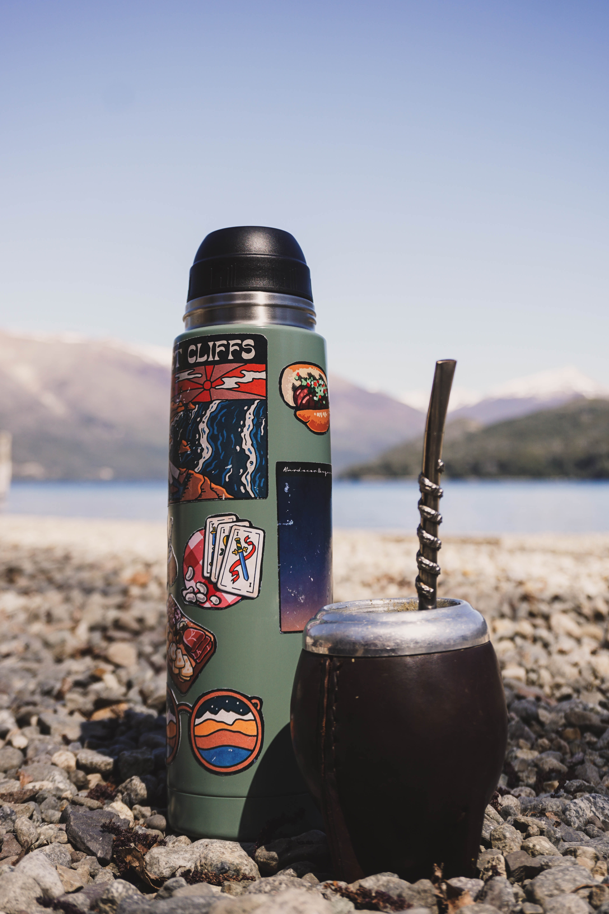

Mate Argentino
En la Argentina, llamamos mate a la infusión que se prepara con sus hojas, como también al recipiente donde se la toma, siendo el más utilizado el de calabaza.

En la Argentina, llamamos mate a la infusión que se prepara con sus hojas, como también al recipiente donde se la toma, siendo el más utilizado el de calabaza.